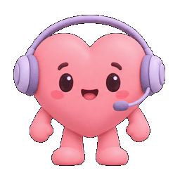
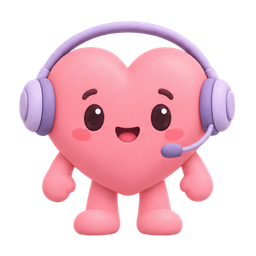
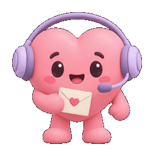
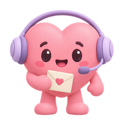
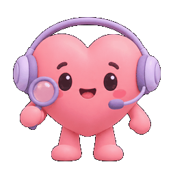
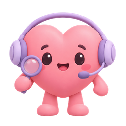
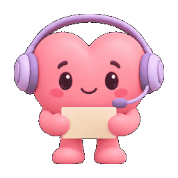
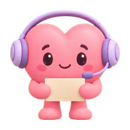

Mẫu A đã duyệt · 5 animation · 20 frame nền trong suốt · 11/10/2026.
GIF bên dưới lặp lại để xem chuyển động. Trong app, bot thở nhẹ liên tục; hover chạy lại cử chỉ và sau khoảng 12 giây không thao tác tự nhắc theo màn hình. Chờ API và đọc kết quả lặp theo trạng thái thực tế, không bị hover hoặc nhắc tự động ghi đè. Giảm chuyển động tắt các hiệu ứng này.








Mở app · Thiết kế và bằng chứng kiểm tra · Sprite atlas
API và audio trong kiểm tra browser được mock. Chưa nghe thử TTS thật hoặc kiểm tra điện thoại thật.